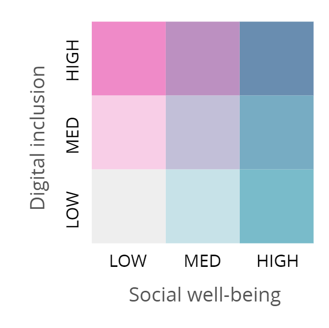

Digital Divide Map
Why are we here?
- To give an overview of the development and execution of the digital divide map
- To offer some options for what Internet NZ wants to see achieved with the map in 2018
- To open open the floor for discussion about digital inclusion in your regions
What we set out to achieve
We wanted to render digital divides in a more accessible way, and to understand how digital inclusion and social wellbeing indicators related to each other.
We recieved funding from the Data Futures Partnership to develop this project as an example of how data can be used to tell a story about New Zealanders
Why a Digital Divide Map
- Technical access is getting solved
- In the 2020s access will not equal infrastructure
- Affordability & skill are the next access issues
How the map is constructed
A digital inclusion indicator which is made up of:
- Broadband map (ex satellite)
- Census data (whether household has Internet)
- OECD's PIAAC technology skills dataset
And a social well being indicator:
- the University of Otago’s Social Deprivation Index
What the colours represent
Dark = good
Light = bad